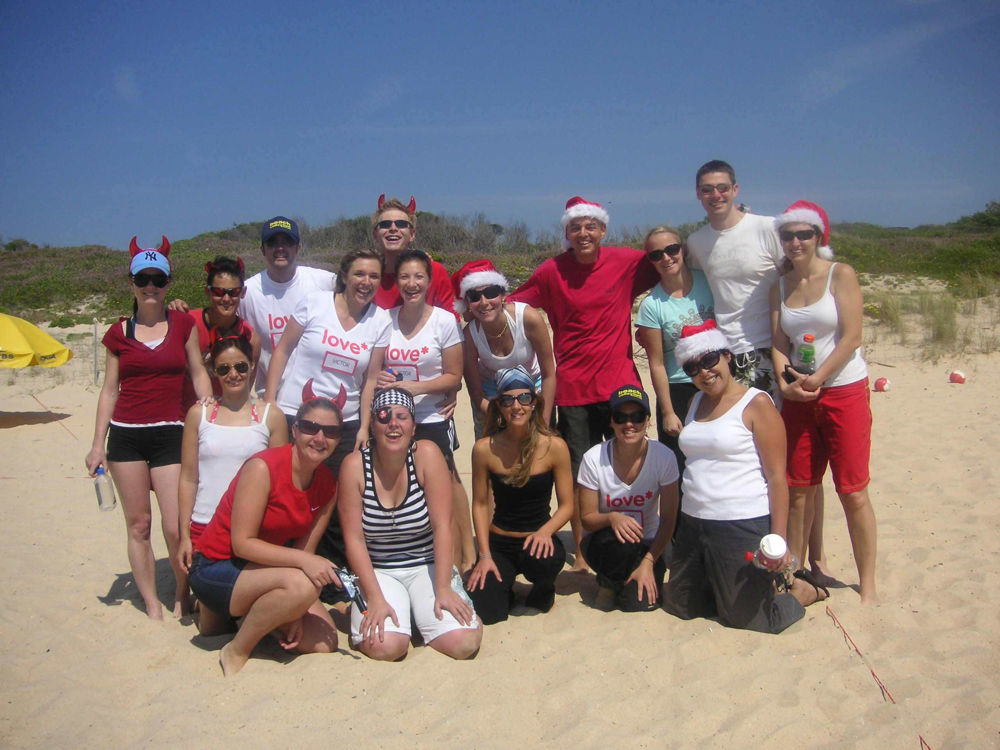

Beach Volleyball: Maroubra
Our six week beginners course has now come to an end. Playing at Maroubra beach, 10 minutes south of Coogee, the Cat and I signed up for a six week course in Beach volleyball. Victor, an ex-Australian beach Volleyball player himself, lead the course with two fellow instructors helping him out. Learning team positional moves, the piston stance and the many ball manouvers such as the dig, set, camel toe (!), cobra, block and the all important spike, we're now masterfully skilled for competitions! The Cat has signed up for a combination of more lessons with games thrown in, just to keep her active before her all important football season kicks off early next year!
Saturday 7th October @ 9am was our last lesson and Victor organised four teams of 4 or 5 to battle it out in a mini tournament. With a fancy dress comp thrown in and most improved there were prizes to be had! My team were the "Horny Red Devils". Donned in red and wearing red devils horns but it was the Cats team who were smart. They wore white t-shirts with "Love Victor" written on the front - good move and in fact won them the comp (surprise surprise)! With tight games played the Dogs team came through and won the mini tournament! There was no prize but I did manage to win a volleyball for coming up with a name for their weekly eNewsletter - "Dig Deep"!
Anyway click here and check out the photos we took and here for Victors.
